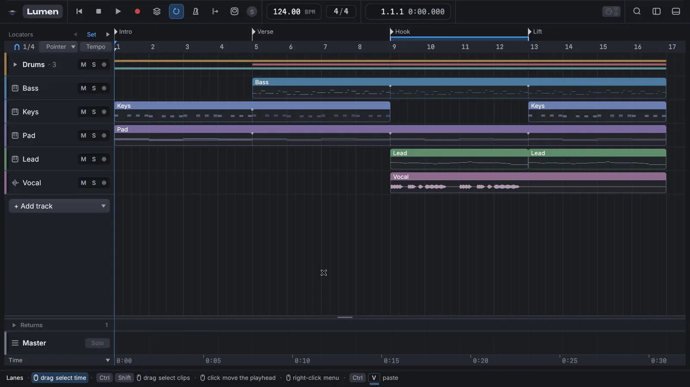
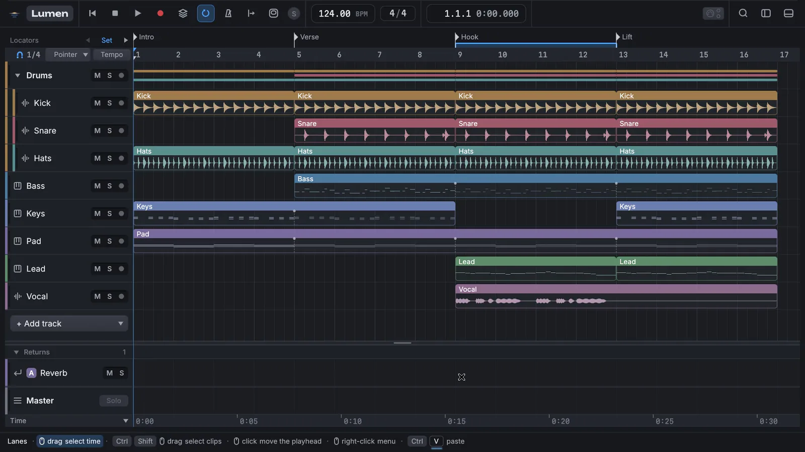
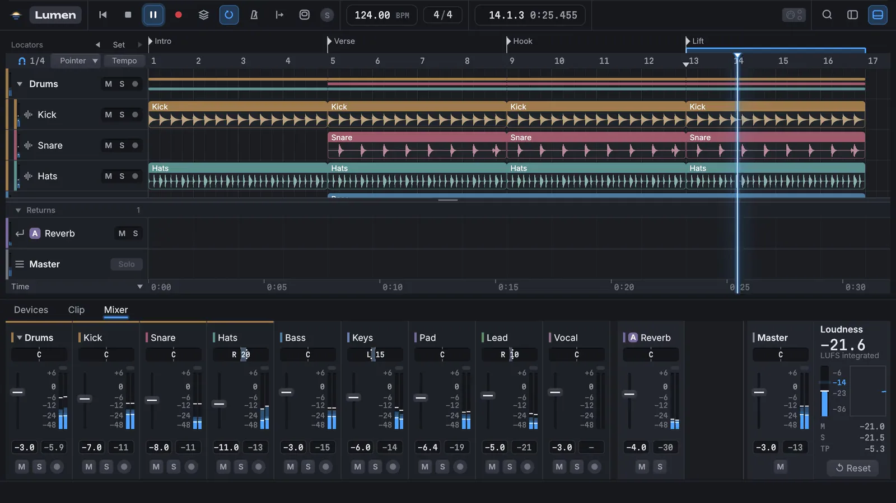
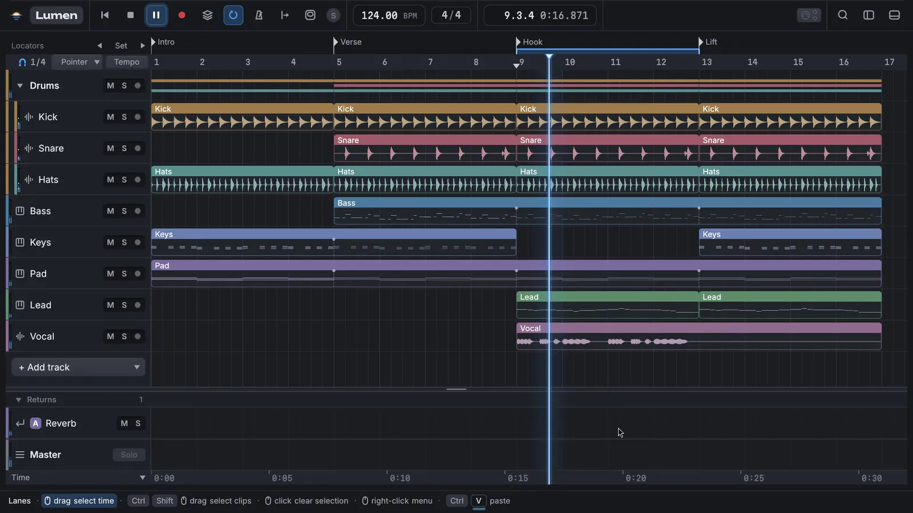

Lumen is an arrangement-first digital audio workstation written in Rust. VST3 instruments and effects, low-latency ASIO on Windows, and every edit undoable.
Four bars of a demo project, playing in the current build. Silent: recorded on a test audio device.
See it work
Short loops recorded from the current build, mouse and keyboard as they happened. Scroll to step through them.

01Draw, move, shapeDouble-click a clip to open the piano roll. Draw notes, box-select them, drag them down, then ramp their velocities with one stroke.Double-clickBDrag

02Split and fadeZoom to a clip, split it at the playhead, and pull the fade handles. Every edit is one undo step.ZCtrl+EX

03A mixer that movesFaders follow their automation while meters run. Groups, returns and the master's loudness readout share the same panel.Shift+Tab

04Every command, one search awayThe command palette finds any action by name, with its shortcut beside it. Here it adds a MIDI track mid-playback, and undo takes it back.Ctrl+KCtrl+Z
Built for staying in flow
What works in the current build.
The timeline is the product
Tracks, clips and time-range selection, fades on free curves, zoom down to single samples with waveforms that stay crisp.
Piano roll and quantize
Record with overdub and replace, edit with velocity and controller lanes, quantize with strength and swing, import and export MIDI files.
VST3 in its own process
Instruments and effects run sandboxed, so a plugin that crashes is flagged and reloaded instead of taking the session with it.
Groups, sends, sidechains
Nested group tracks, returns, automatic delay compensation, and LUFS and true-peak metering on the master.
Everything with a value
Lanes for mixer and plugin parameters, clip envelopes, and Read, Write, Touch and Latch recording.
Work is never lost
Atomic saves, rolling backups, autosave and crash recovery, and unlimited undo where each edit is one step.
Where Lumen is
Built in milestones. Each ends with a working build, automated tests and hands-on hardware tests.
M1–M4
Engine, arrangement, mixer
● Done
M5–M7
MIDI, VST3, automation, editing
● Built, in final testing
M9 · NOW
Recording and export
In progress
M8
Drum maps, built-in devices
○ Next
M10
Hardening and 1.0
○ Planned
No installer yet
Lumen is open source under GPL-3.0. You can build it from source today on Windows, macOS or Linux; installers arrive with 1.0.